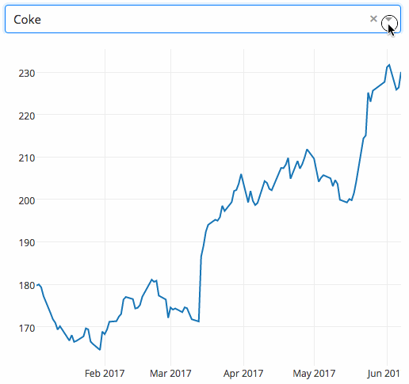

Bottom Line Up Front
Dash is a productive Python framework for building web applications. It is a flexible, easy to learn framework, that has many uses in business. Specifically, it is helpful for data analysis, exploration, visualization, and modeling. Though enterprise accounts and features are available, Dash is an open source library (released under the MIT license.) As a result, Dash is an excellent option for any company who wants to get more out of their data, but who does not have the resources or desire to hire custom teams to build niche solutions.
Dash Overview
Dash describes their applications as follows: “Dash applications are web servers running Flask and communicating JSON packets over HTTP requests. Dash’s frontend renders components using React.js, the Javascript user-interface library written and maintained by Facebook.” If any of that confuses you, don’t worry. Here is a more simple breakdown of what Dash does:
In a manner of speaking, Dash is an Ikea for those who work with data. Think how Ikea designs furniture, then sells it in nice packages for the user to assemble how and where they see fit… Dash kind of does the same thing for data applications. Dash takes elements from Python (awesome for crunching numbers), Javascript (great for visualizations), HTML & CSS (used for web development) and combines them all into nice packages called ‘components.’ Data users can then assemble these packages how and where they see fit.
To extend the analogy, consider what furnishing a home would be like without the furniture packages designed by Ikea (and similar firms). People would essentially have two options: pay someone to custom design the exact furniture they want or buy pre-made, pre-assembled furniture, exactly as it is. The former option would be expensive; the latter wouldn’t allow home-owners to customize their furniture.
Building data applications, prior to Dash (and similar tools) was much the same way. People wanting to use data could either hire expensive teams to build exactly what they have in mind, or purchase clunky off-the-shelf solutions (like Tableau – yuck!) Thanks to Dash, users now have the option to use the Dash components as they see fit.
All of the Dash core components are freely available on their site (referenced at the end of the paper). Their announcement essay, however, provides a few great examples of just how easy to work with these core components are. For example:
“Here’s a 43-line example of a Dash App that ties a Dropdown to a D3.js Plotly Graph. As the user selects a value in the Dropdown, the application code dynamically exports data from Google Finance into a Pandas DataFrame. This app was written in just 43 lines of code (view the source). Simple.”

Before Dash, making something like this would have been much, much more effort than a few dozen lines of code. Thank you, Dash!
Use Cases for Dash
I have a lot of respect for Dash’s creator chriddyp, the Dash team and Dash community. The work they have done has an infinite number of business applications. Accordingly, please note the use cases contained herein are simply to give an idea of what Dash can be used to do. This is by no means exhaustive.
-
KPI Dashboards – Perhaps one of the most obvious uses for Dash. Most business are familiar with Dashboards, so there isn’t a lot of explanation needed here. I should point out, however, that this is an area wherein Dash really shines (thus the name ‘Dash’). Their visuals are clean, the features are highly customizable and, most importantly, its open source. Given how convenient this is, it always surprises us how many businesses (or teams within a larger business) that don’t have dashboards.
-
Data Visualizations – These days, there is so much attention given to AI that its almost as if people have forgotten about actual human intelligence. Humans, too, are outstanding at spotting patters quickly. This is why we love data visualizations so much. And fortunately for us, this is another area wherein Dash shines. The interactive graph components in Dash are fairly straight-forward and easy to work with.
-
Exploratory Data Analysis – Dash apps can serve as a great focal point for exploratory data analysis. The last post ‘What it Means to be Data Driven’ is a good example of this. I used Dash to create the tool to explore the data in that demo. (Link below)
-
Creating a User-Friendly Database Interface – One of the best things a data analysis teams can do for their businesses is to empower the entire business to work with data directly. There are usually technical limitations, however, that business users either don’t know how to work through, or simply don’t want to. For instance, PGAdmin is a commonly used tool for working with databases, but most business owners would never know how to install and operate it (through SQL queries, for instance). Dash solves for this. Data Analysis teams can create and host Dash apps that are user-friendly enough for business users. This helps the business, and it helps keep data analysis teams focused on high-value problems (versus answering little questions that business users could answer themselves).
-
MVP Development – Lastly, Dash is a great “look before you leap” tool that large businesses can use before committing to large scale digital transformations / systems changes. I’ve seen a lot of companies commit hundreds of thousands of dollars towards transformation projects without MVPs. To reference my Marine days, its like committing your main force to a battle without any form or reconnaissance whatsoever. Frankly, its cringeworthy. Yet it happens all the time. Dash can be a good tool for mitigating this risk, as it can be used to quickly build a facsimile of the final product. This allows a business to gauge what problems will arise when the full implementation of a large-scale project occurs.